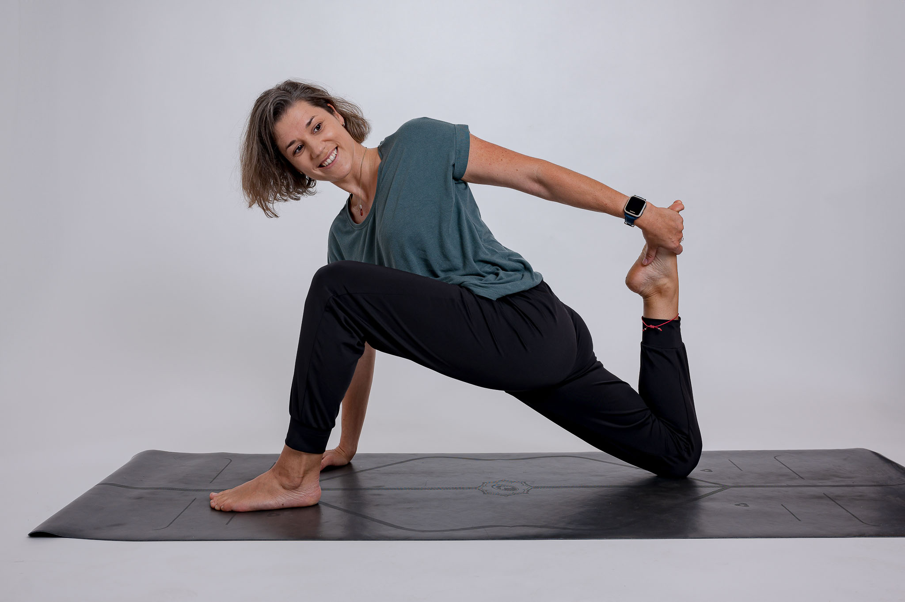
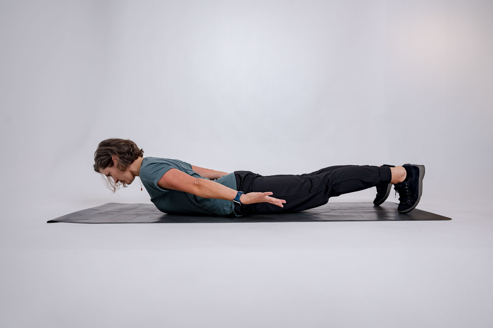
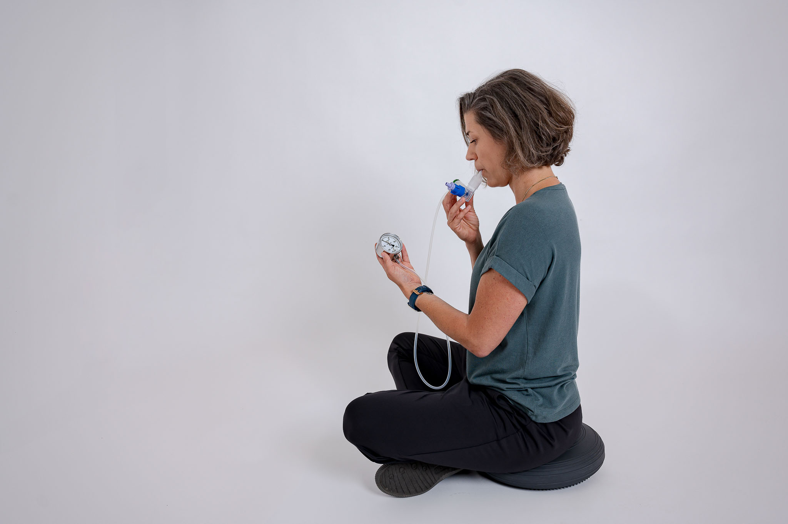
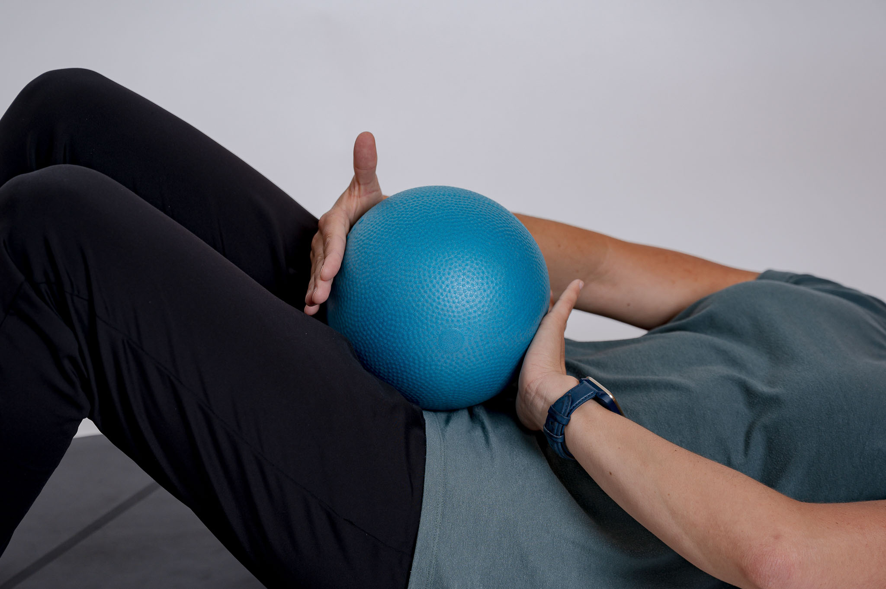

Mein Angebot
Physiotherapie, die wirkt.
Jede Behandlung beginnt mit einem ausführlichen Gespräch. Ich nehme mir die Zeit, Ihre Situation zu verstehen – und entwickle dann einen individuellen Therapieplan.
Hands-on
Passive Behandlung – ich arbeite direkt an Ihrem Körper.

Leistung 01
Manuelle Therapie
Die Manuelle Therapie ist eine spezialisierte Form der Physiotherapie, bei der gezielte Handgriffe eingesetzt werden, um Bewegungseinschränkungen zu lösen und Schmerzen zu lindern.
Ich arbeite mit sanften Mobilisierungstechniken an Gelenken und Weichteilen. Ziel ist es, die natürliche Beweglichkeit wiederherzustellen und Muskelspannungen zu reduzieren.
Geeignet bei: Rückenschmerzen, Nackenschmerzen, Schulter- und Knieproblemen, nach Operationen, Sportverletzungen.
Hands-off
Aktive Therapie – Sie arbeiten selbst, ich begleite und leite an.

Leistung 02
Aktive Übungen
Aktive Übungen sind ein wesentlicher Bestandteil der Physiotherapie. Durch gezieltes Training stärken wir die Muskulatur, verbessern die Koordination und unterstützen den Heilungsprozess.
Ich erstelle für Sie ein individuelles Übungsprogramm, das Sie auch zu Hause weiterführen können. So bleiben Sie aktiv und erzielen nachhaltige Ergebnisse.
Geeignet bei: Muskelaufbau nach Verletzungen, Haltungskorrektur, Sturzprophylaxe, Rückenproblematiken.

Leistung 03
Atemtherapie
Atmen ist die grundlegendste Funktion unseres Körpers – und doch atmen viele von uns unbewusst und ineffizient. Die Atemtherapie hilft, die Atmung neu zu entdecken und zu verbessern.
Durch bewusste Atemtechniken lassen sich Lungenkapazität, Entspannungsfähigkeit und allgemeines Wohlbefinden deutlich steigern.
Geeignet bei: Lungenproblemen, Asthma, Stress, Atemwegserkrankungen, postoperativer Nachsorge.

Leistung 04
Beckenbodentherapie
Der Beckenboden ist eine oft unterschätzte Muskelgruppe, die eine zentrale Rolle für unsere Gesundheit, Stabilität und Lebensqualität spielt.
In der Beckenbodentherapie erarbeiten wir gemeinsam ein Bewusstsein für diese Muskulatur und trainieren gezielt Kräftigung oder – wo nötig – Entspannung.
Geeignet bei: Inkontinenz, nach der Geburt, bei Beckenschmerzen, Senkungsbeschwerden, für Frauen und Männer.
Weitere Leistungen
Ergänzende Therapieformen
KPE – Komplexe Physikalische Entstauungstherapie
Die KPE, auch bekannt als manuelle Lymphdrainage, ist eine sanfte Massagetechnik zur Entstauung des Lymphsystems. Sie wird eingesetzt bei Lymphödem, postoperativen Schwellungen sowie chronischen Stauungsbeschwerden und kann Schmerzen und Schweregefühl deutlich lindern.
Heilmassage
Die klassische Heilmassage löst Muskelverspannungen, fördert die Durchblutung und regt den Stoffwechsel an. Sie wirkt entspannend und schmerzlindernd – ideal als Ergänzung zur aktiven Physiotherapie oder bei akuten Verspannungen.
Elektrotherapie
Bei der Elektrotherapie werden gezielte elektrische Impulse eingesetzt, um Schmerzen zu lindern, die Muskulatur zu stimulieren und den Heilungsprozess zu unterstützen – häufig ergänzend zur manuellen Therapie.
Honorare
Transparente Preise
Als Wahltherapeutin rechne ich direkt mit Ihnen ab. Alle Kassen erstatten einen Teil der Behandlungskosten – alle Rückerstattungstarife finden Sie in der Tabelle.
| Leistung | Rückvergütung Krankenkasse | ||||
|---|---|---|---|---|---|
| Dauer | Preis | ÖGK | BVAEB | SVS | |
| Heilgymnastik | 30 Min. | € 53,00 | € 30,40 | € 38,00 | € 33,65 |
| 45 Min. | € 80,00 | € 45,62 | € 57,02 | € 50,47 | |
| 60 Min. | € 106,00 | € 60,82 | € 76,03 | € 67,29 | |
| KPE (Lymphdrainage) | 30 Min. | € 53,00 | — | — | € 33,65 |
| 45 Min. | € 80,00 | € 45,62 | € 57,02 | € 50,47 | |
| 60 Min. | € 106,00 | € 60,82 | € 76,03 | € 67,29 | |
| Heilmassage | 15 Min. | € 27,00 | € 8,10 | € 10,12 | € 9,13 |
| Elektrotherapie | 15 Min. | € 7,50 | * € 4,06 | * € 5,07 | € 4,57 |
Alle Preise ohne Umsatzsteuer (USt-befreit gem. § 6 Abs. 1 Z 19 UStG) · Die Rückerstattungsbeträge für ÖGK, BVAEB und SVS sind Richtwerte – bitte erkundigen Sie sich bei Ihrer Kasse.
* Elektrotherapie ist bei ÖGK und BVAEB nur additiv (zusätzlich zu einer Hauptleistung) und eingeschränkt erstattbar.
KFA-versichert? Rückerstattungstarife der Krankenfürsorgeanstalt (KFA) auf Anfrage – einfach melden.
SVS-Versicherte: Vor dem ersten Termin ist eine Bewilligung der SVS erforderlich.
Wichtiges zur Abrechnung
Was Sie vor dem ersten Termin wissen sollten
⚠ Ärztliche Zuweisung (Überweisung) erforderlich
Ich bin weisungsgebunden. Ohne ärztliche Zuweisung (Überweisung) darf ich keine physiotherapeutischen Leistungen anbieten und durchführen. Bitte bringen Sie die Zuweisung zum ersten Termin mit.
SVS-Versicherte: Bewilligung erforderlich
Wenn Sie bei der SVS (Sozialversicherungsanstalt der Selbständigen) versichert sind, müssen Sie vor dem ersten Behandlungstermin eine Bewilligung bei der SVS einholen. Bitte klären Sie das vor Ihrer Buchung – ohne Bewilligung ist keine Kostenerstattung möglich.
Wahltherapie – direkte Abrechnung
Als Wahltherapeutin rechne ich direkt mit Ihnen ab. Sie bezahlen nach der Behandlung und reichen die Honorarnote bei Ihrer Kasse ein. ÖGK, BVAEB und SVS erstatten einen Teil der Kosten.